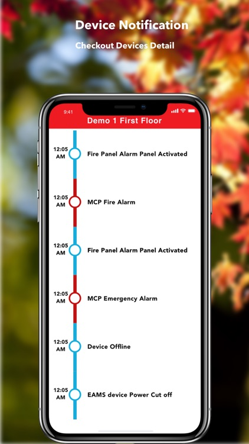
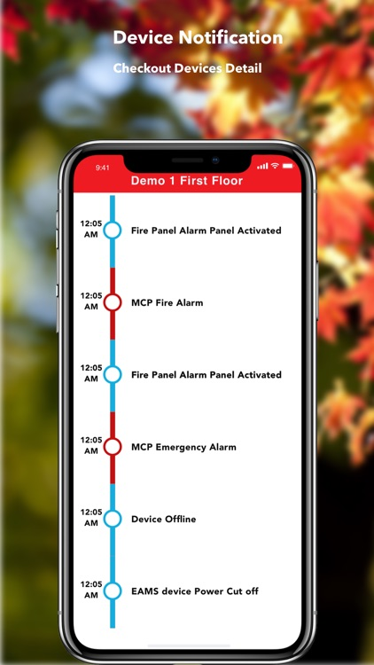

ELV system
ELV systems denote Electrical and Mechanical extra-low voltage systems. Today, it is not your phones and devices that are smart; even buildings are turning smart. Smart buildings are energy-efficient buildings that are constructed to be sustainable and co-exist peacefully with the environment. ELV encompasses most systems that are being used inside a building – from lighting to security, HVAC, and access controls. ELV Security systems include systems that help in the detection of fire, raise fire alarms, use the public address system, watch over access controls, and detect intrusions, CCTV, and more.
 

Features of ELV systems are:
- Devices and systems that work on Internet Protocol as the communication protocol
- Comes with an open architecture format
- Installing new systems or upgrading a newer version becomes easy.
- It involves minimal cabling and inter-connectivity.
- Minimize maintenance costs.
- It can be operated from remote locations.
- Minimize design and installation costs